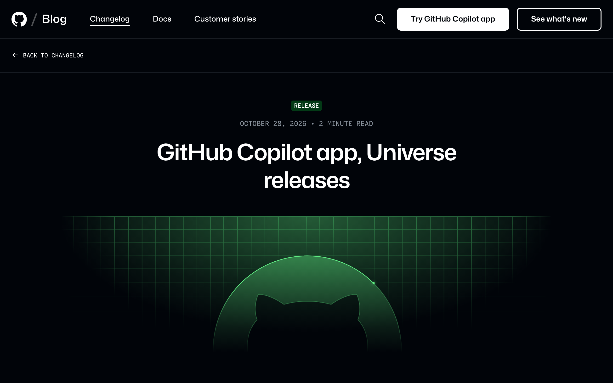
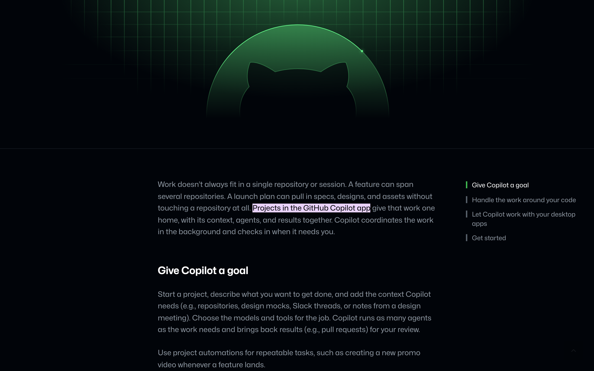
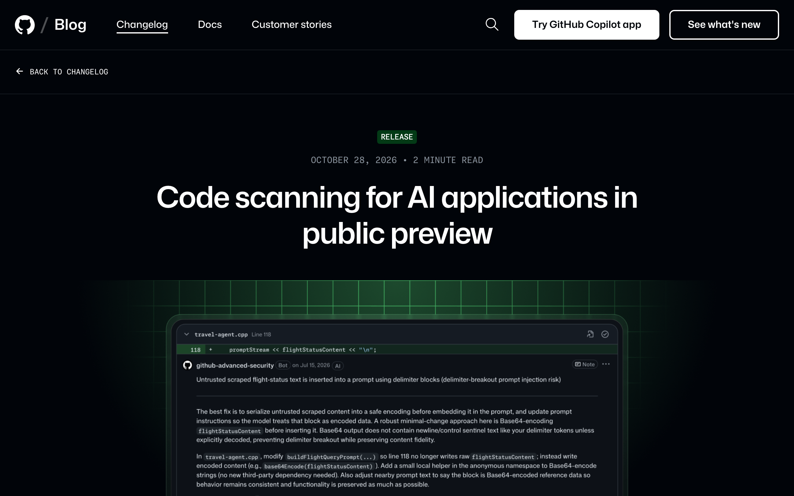
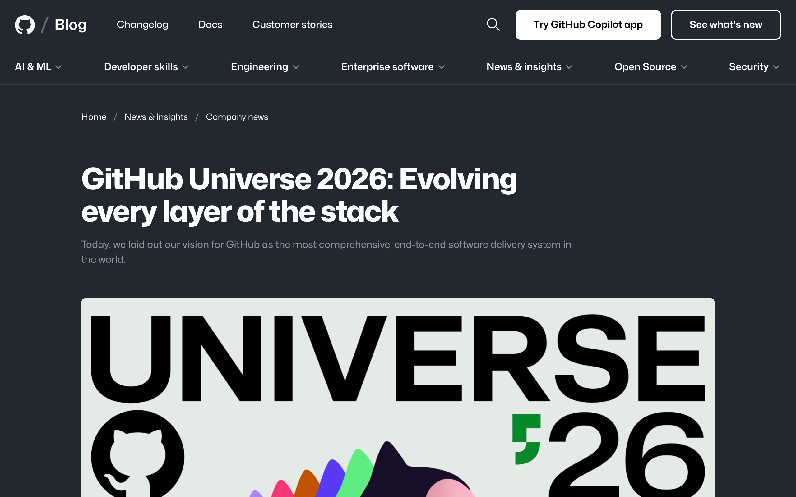

1. Opener: the big shift
Say: “Universe's message this year: Copilot is no longer just autocomplete in your editor. It's an agent-driven delivery system that takes work from issue to merge — and everything announced fits that story.”
- Theme: velocity, intelligence, quality across the whole SDLC
- Agent sessions follow you across app, VS Code, CLI, and web
- Today's buckets: App & orchestration · Models · Review & security · Platform · Enterprise & billing · What to do Monday
Notes: Ask the room who has used Copilot cloud agent. Tailor depth to the answer.
2. GitHub Copilot app
NewSay: “A cross-platform, agent-first app. You orchestrate from issue to merge — specs, design discussion, even telemetry analysis — in one place.”
- Start a cloud agent session on any device, continue it anywhere (app, VS Code, CLI, web)
- Hosts Projects and Automations (below)
- Connectors: Vercel, Cloudflare, Sentry and others authenticate once across app, CLI, and web

Notes: If you have a demo, show handing a session from the app to the CLI.
3. Copilot Projects & Automations
Public preview*Say: “Projects group goals, context, sessions, and results across multiple repos. Automations make agent work repeatable.”
- Projects: coordinate agent sessions across repositories with one place to oversee and redirect
- Automations: reusable tasks run on triggers, schedules, or on demand; can propose improvements from outcomes; new tools, triggers, and cost controls
- Good fits: dependency chores, release notes, triage, docs drift

Notes: *Reports disagree on exact availability stage — confirm on the changelog before saying “GA” or “preview.”
4. Copilot Fusion
GA*Say: “Stop choosing models by hand. Fusion evaluates the task and routes to the best model, or a combination, balancing cost, speed, and quality.”
- Effort levels: Standard, High, Max
- Orchestrates models per subtask (single, cascade, critique workflows); admins can set model policy and defaults
- GitHub benchmark claims: Fusion Max scores close to a leading single model at roughly half the API cost and ~40% faster per task
- Surfaces: VS Code, Copilot app, Copilot CLI, JetBrains

Notes: Present the numbers as GitHub's own benchmarks, not independent results. *Confirm GA wording on the changelog.
Source: Changelog: Route and orchestrate models with Copilot Fusion
5. Code review: Max tier
Preview*Say: “Agents write more code, so review has to scale. Max is a deeper review tier alongside Lite and Balanced.”
- GitHub reports the highest F1 score for high-severity issues
- Use Max on risky paths (auth, payments, infra); keep Balanced elsewhere
- Copilot can now act as reviewer and approver; approvals reset when new commits are pushed; configurable at repo/org/enterprise level
- Related: pull request stacks to break big PRs into smaller linked reviews

Source: Changelog: Max and approvals · Blog: Universe 2026 — Evolving every layer of the stack
6. Security & code quality
Say: “Security has to keep pace with agent speed — so it moved into the same loop.”
- Security extension: review code and agent-generated work next to code scanning alerts in one interface
- AI Scan: find vulnerabilities in any language (beyond CodeQL), hand fixes to Copilot; code scanning for AI applications is in public preview
- AI push protection: blocks unstructured secrets like passwords at push time — for humans and agents alike
- Expanded enhanced code scanning and monitoring for enterprises and AI-generated code

Notes: AI Scan reported as rolling out for Enterprise — say “starting to roll out” unless you've verified.
7. Image generation & desktop automation
Public previewSay: “Copilot can now generate and edit images from chat — handy for diagrams and docs — and drive desktop apps on macOS and Windows, with your approval, even where there's no API.”
- Image generation and editing from chat
- Desktop automation with explicit user approval

8. Platform & workflow improvements
- Workflow lockfiles and multi-cloud compute for reliability
- Role-based moderation for GitHub Issues; issue artifacts
- Pull request stacks
- CLI attachments: images and video straight from the terminal
- Webhook IP ranges documented in the Meta API
Source: GitHub Changelog
9. Enterprise & pricing
Say: “For enterprise customers, the packaging changed.”
- GitHub Enterprise reported to include Copilot features (app, automations, code review) without a separate Copilot subscription
- Shift toward AI usage-based billing (AI credits), per-user budgets, and a Max tier with more included credits
- Plan for cost controls and budgets early

Notes: Highest risk of inaccuracy. Verify exact terms and effective dates against official pricing/changelog before presenting.
10. What to do Monday
- Try the Copilot app with one real issue, end to end
- Pilot one Automation on a low-risk chore
- Enable AI push protection and try AI Scan on a non-CodeQL repo
- Use Max review on one high-risk service
- Review your Copilot billing and budgets
Close: “Pick one, ship it this week, and measure it.”
Sources & fact-check list
- GitHub Blog — Universe 2026: Evolving every layer of the stack
- Changelog — GitHub Copilot app, Universe releases
- Changelog — Copilot Fusion
- Changelog — Copilot code review: Max and approvals
- Changelog — Code scanning for AI applications (public preview)
- Changelog — Updates to Copilot billing and plans
- Changelog — Copilot in JetBrains, Universe releases
- GitHub Universe recap
Before the conference: the official blog/changelog pages could not be opened directly while drafting; content was assembled from search summaries citing them plus third-party recaps. Re-check every item marked * (availability stage), the Fusion benchmark numbers, and the enterprise pricing claims.
Total: ~28 min plus Q&A. Trim sections 7–8 for a 20-minute slot.